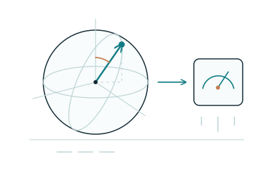

01

Compute · Simulate · Sense
Quantum technologies
Understand quantum computing, simulation and sensing. Explore where these approaches could be relevant and what their adoption would require.
- Technology and readiness assessments
- Use-case exploration and feasibility
- Research-informed technology roadmaps